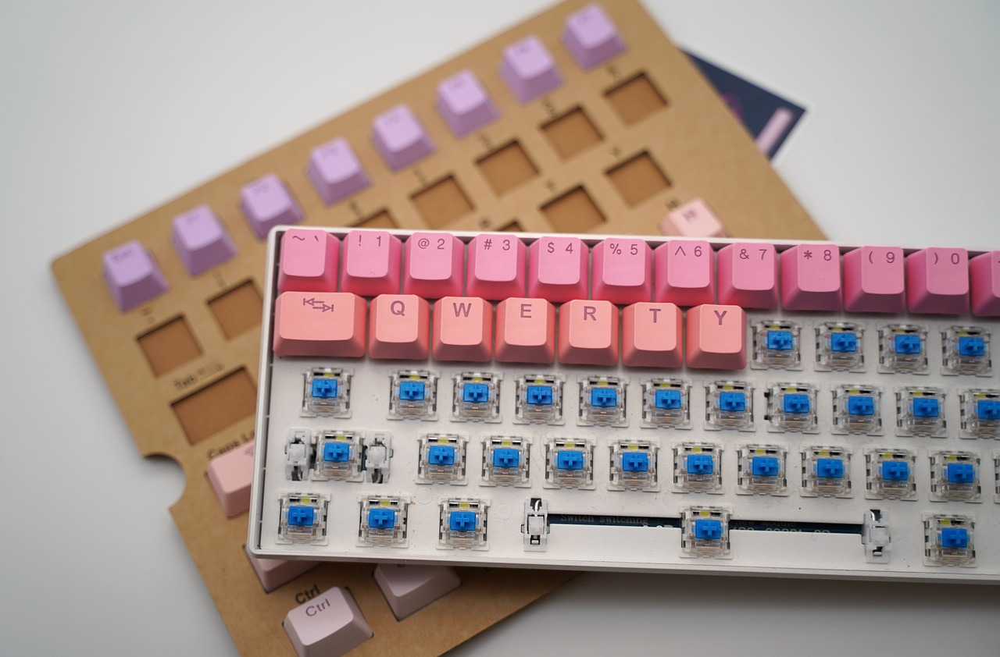
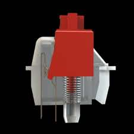
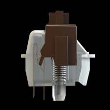

Qu'est-ce qu'un clavier méca ?
Les claviers méca ou clavier mécaniques sont ceux que la plupart des gens imaginent lorsqu'ils pensent aux claviers ; ce sont les claviers robustes d'allure classique des années 1980. Une définition plus appropriée est que les claviers mécaniques sont fabriqués avec des touches en plastique de haute qualité sous chacun des capuchons.
De part leur conception robustes et le confort de frappe qu'ils apportent c'est un clavier parfait pour les professionnels. Cela en fait un clavier idéal pour les développeurs.
Définition d'un clavier méca
Un clavier méca est un clavier construit avec des interrupteurs à touches de haute qualité, généralement actionnés par un ressort. Ces touches varient en fonction de l'application du clavier ou des préférences de l'utilisateur.
Alors que certains des premiers claviers largement vendus, comme le modèle M d'IBM dans les années 1980, utilisaient des interrupteurs mécaniques, les années 1990 ont vu une vague de claviers à dôme en caoutchouc peu coûteux qui a inondé le marché des claviers. Les claviers à dôme en caoutchouc représentent plus de 90 % des claviers utilisés aujourd'hui et offrent une sensation et une expérience de frappe peu coûteuses mais insatisfaisantes.
Les claviers mécaniques placent la barre très haut. Les commutateurs, le cadre, la fonctionnalité, les méthodes d'impression, la construction des touches, le circuit imprimé, l'éclairage LED (netteté, luminosité, réglage) et une foule d'autres caractéristiques d'un clavier mécanique sont de loin supérieurs aux claviers à dôme en caoutchouc traditionnels. La plupart de ces améliorations se résument à une seule chose : le toucher. Les claviers mécaniques sont tout simplement plus agréables au toucher que les claviers à dôme en caoutchouc.
Taper sur un clavier mécanique signifie appuyer sur une touche, ce qui active un véritable interrupteur physique sous lequel se trouve un ressort. Ainsi, lorsque vous appuyez sur la touche, vous la sentez et vous entendez un "clic" qui vous indique que vous avez appuyé assez fort sur la touche pour vous enregistrer (et que vous n'avez pas manqué une lettre ou un chiffre).
Quelles sont les différentes parties d'un clavier mécanique ?
Les claviers mécaniques sont composés de trois parties distinctes.
- La touche : le capuchon supérieur avec la lettre/le chiffre
- La tige : la partie située sous le capuchon de la touche qui se déplace vers le bas lorsqu'on appuie dessus
- Le cadre : le boîtier qui réunit tous les éléments.
Quelles sont les différents types de clavier méca ?
Il existe deux grandes familles de claviers mécaniques :
-
Les claviers mécaniques avec switches linéaires.
 -
Les claviers mécaniques avec switches tactiles.

Quelles sont les avantages et les inconvénients d'un clavier méca ?
Liste des inconvénients d'un clavier mécanique
-
Les claviers mécaniques sont plus bruyants.
Les claviers méca sont généralement un peu plus bruyants que les autres. Si cela vous pose un problème, vous pouvez soit choisir l'un des modèles de claviers mécaniques silencieux, soit utiliser des joints toriques pour diminuer le niveau sonore de votre clavier.
-
Les claviers mécaniques sont plus cher
Les claviers mécaniques sont plus chers que la plupart des claviers à membrane. Mais vous devez le considérer comme un investissement - si vous traitez bien votre clavier, vous n'aurez pas besoin d'un nouveau clavier avant un certain temps.
-
Les claviers méca sont lourds
Un poids plus important favorise la stabilité, mais il rend aussi le transport du clavier un peu moins confortable. De plus, le poids peut être gênant si vous voulez mettre le clavier sur vos genoux.
Liste des avantages d'un clavier mécanique
-
Les claviers mécaniques ont une meilleur durée de vie
Les claviers méca sont généralement un peu plus bruyants que les autres. Si cela vous pose un problème, vous pouvez soit choisir l'un des modèles de claviers mécaniques silencieux, soit utiliser des joints toriques pour diminuer le niveau sonore de votre clavier.
-
Les claviers méca offrent une meilleur expérience de frape à
l'utilisateur
Amélioration de l'expérience de frappe / retour d'information Un interrupteur mécanique offre bien plus de possibilités de réglage qu'un simple dôme en caoutchouc. Il n'est donc pas vraiment surprenant qu'il existe de nombreux types d'interrupteurs aux caractéristiques différentes. Certains interrupteurs ont un point d'actionnement détectable, d'autres offrent un retour acoustique supplémentaire. Il y a des interrupteurs optimisés pour le jeu et d'autres pour la frappe. Vous trouverez plus d'informations à ce sujet dans l'article sur les types de commutateurs. Cela en fait des claviers parfaits pour les développeurs
-
Le poids
Un poids plus important favorise la stabilité, mais il rend aussi le transport du clavier un peu moins confortable. De plus, le poids peut être gênant si vous voulez mettre le clavier sur vos genoux.